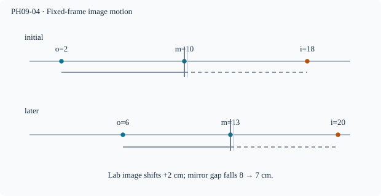

Prerequisite bridge
PH09-02, PH01 (unbound)
Before starting, identify the reference frame, directed rays, units and applicable geometric assumptions. Unbound prerequisites remain provisional.
Connected textbook foundation (preserved from PR #5)
5. Moving mirrors and apparent image motion
Choose a one-dimensional coordinate perpendicular to the plane mirror. If the mirror is at position m and the object at x_o, the virtual image is at x_i=2m-x_o. This can be derived directly from symmetry about the mirror plane; the object-to-mirror and mirror-to-image signed distances are opposite.
If the object is fixed and the mirror shifts by \Delta m, the image shifts by 2\Delta m. If the mirror is fixed and the object moves by \Delta x_o, the image displacement is -\Delta x_o. When both move, add both changes: \Delta x_i=2\Delta m-\Delta x_o.
Worked anchor: A mirror moves 4 cm toward a stationary object. The image moves 8 cm in the mirror's direction in a fixed room coordinate. Before assigning “toward” or “away,” declare the positive axis and which side of the mirror contains the object.
Build and check the model
Choose a fixed coordinate x perpendicular to a translating plane mirror at x=m. Object at x=o and image at x=i satisfy i−m=m−o, hence i=2m−o. Subtract two configurations: Δi=2Δm−Δo. With a fixed frame v_i=2v_m−v_o. Relative to the mirror, i−m=m−o; a relative distance and a room coordinate are different quantities.
Worked anchor
Mirror moves from 10 to 13 cm, object from 2 to 6 cm. Images are 18 and 20 cm: Δi=2 cm. Image–mirror separation falls from 8 to 7 cm.
Condition and limiting check
The equation holds for translation with parallel planes, not arbitrary rotation or a crossing behind an opaque reflecting face.
Misconception repair
A moving mirror does not invariably make the image move twice as far as the mirror; that assumes a stationary object.
Reasoning diagram

Self-check before transfer
Object and mirror shift +6 cm and +2 cm along the same fixed axis. How far does the image move?
Check the reasoning
Δi=2Δm−Δo=4−6=−2 cm. A negative shift means opposite the positive coordinate direction.
The next page contains fresh authored transfer, not an examination reproduction.
Source and figure status
Curriculum pointer CBSE10; candidate scope only. Preserved chapter manuscript. An original subtopic-specific SVG is attached above. Scientific figure and teaching-sufficiency reviews remain HOLD.